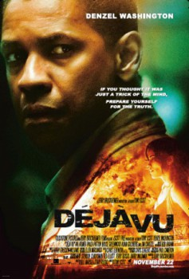

Deja Vu (2006)


If you thought it was just a trick of the mind, prepare yourself for the truth.

Etiquetas:Time TravelActionCrimeSci-FiThriller
País:Estados Unidos, 126 minutos.
Idiomas:Inglés
GénerosAcción, Policial, Ciencia Ficción, Suspenso
Director/es:
Guionistas:
Códec de vídeo:Unknown
Número: 2664
TomatoMeter:

--

--
Clasificación IMDb:


7.1/10 (336.6K votos)
Certificación:
Argumento:
After a ferry is bombed in New Orleans, an A.T.F. agent joins a unique investigation using experimental surveillance technology to find the bomber, but soon finds himself becoming obsessed with one of the victims.
Reparto
Medio: Archivo de video,
Localización: D:\PELICULAS\ACTORES\Denzel Washington\Deja Vu [2006] [720p] [Dual Audio] [716,36 Mb]\Deja Vu [2006] [720p] [Dual Audio].mp4
Prestado: No
Rel. aspecto: Unknown